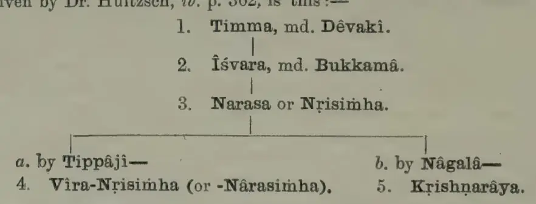
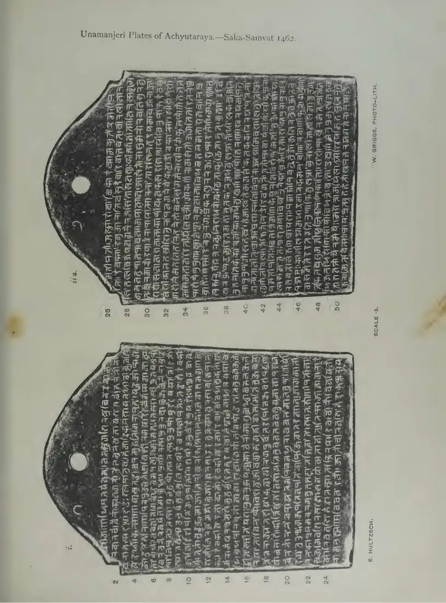
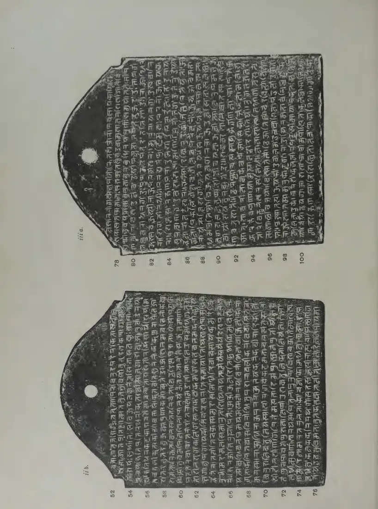
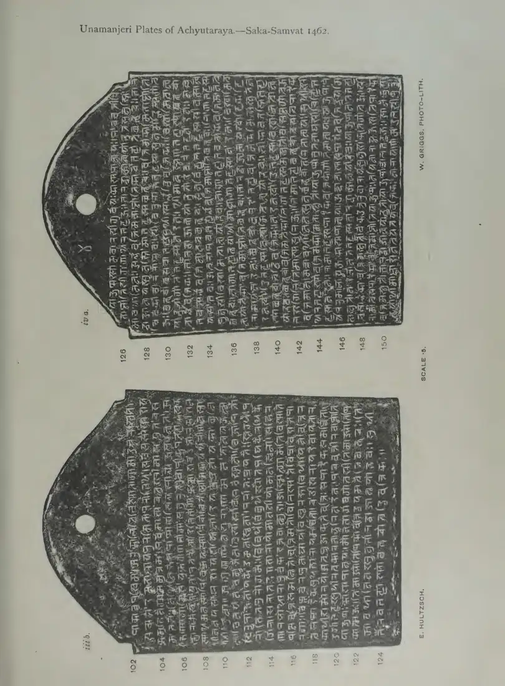
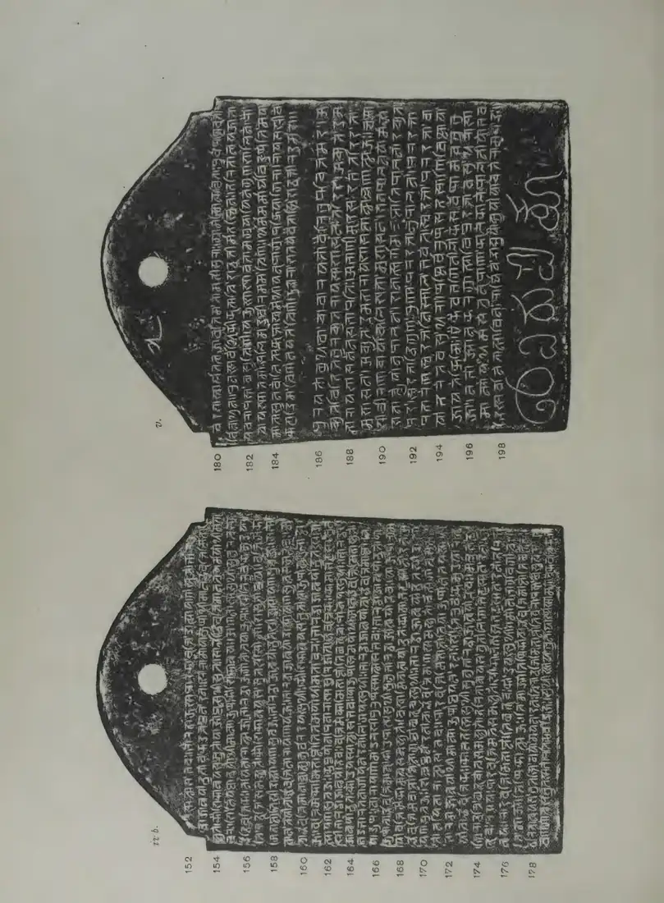

Ûnamâñjêri plates of Achyutarâya ; Śaka-Saṁvat 1462
No. 24.— UNAMANJERI PLATES OF ACHYUTARAYA;
SAKA-SAMVAT 1462.
BY F. KIELHORN, PH.D., C.I.E.; GÖTTINGEN.
These plates were found by Mr. M. Aiyâsvâmi Aiyar, Inspecting Schoolmaster of the Chingleput tâlukâ, in the possession of the Munsif of the village of Üñamâñjêri, four miles east of the Vanđalûr Railway Station. At Dr. Hultzsch's request, they were lent to him by the Tahsildar of Chingleput; and I now edit the inscription from two excellent impressions, supplied to me by Dr. Hultzsch.
These are five copper-plates, the first and last of which have been engraved on the inner side only, while the others are so on both faces. They are numbered, on the first inscribed side of each plate, with the Telugu-Kanarese numerals from 1 to 5, as may be seen from the accompanying photo-lithograph. Each plate is between 7 and 7 broad, and, including the arch at the top, about 10 high; and the writing runs across the breadth of the plates. The plates are held together by a ring, which had been cut before they were received by Dr. Hultzsch. It is about 3 in diameter and thick, and holds a seal, the lower part of which consists of a smaller ring, through which the larger ring is passed. This seal is 1 in diameter. It bears, on a plain pedestal, the figure of a boar, which faces the proper right and is surmounted by a sword or dagger and by the moon and the sun. On the proper left side of the back of the fourth plate the writing has suffered slightly from corrosion; otherwise the plates are in a perfect state of preservation. The writer and engraver have done their work fairly well; but they have omitted ten' aksharas (which we can supply from other inscriptions) at the end of line 23, and sixteen others (which we cannot supply) in lines 149-150, not to mention minor errors.—The characters are Nandinâgarî, excepting the word śrî-Virupâksha in line 199, which is in large Kanarese characters. The inscription offers the rare sign for jh, in the word pîtôjhitas (for pîtôjjhitas) in line 77; and it has a sign for the rough r, which is like the ordinary sign for r combined with the superscript sign for the same letter, in the words mûru, l. 82, Señkalanîrpatṭu, l. 99, and Uruvâr, l. 148. The average size of the letters is about .—The language is Sanskrit, and, excepting the words śrî-Gaṇâdhipatayé namaḥ at the commencement of line 1, the whole is in verse.
1 Read Sva-dattâm=para-dattâm vâ yô harêta vasundharâm | gavâm šata-.
2 Read -vijaya-râjya-prathama-samvatsarê Vaiśâkha-mâsê šukla-pakshê.
3 The text and translation of this endorsement have been supplied by Dr. Hultzsch.
4 Read ûrômun.
5 Read ûr.
The orthography calls for few remarks. The palatal sibilant is five times employed for the dental (e.g. in babhásé, l. 19), and once (in títhiśv=, l. 63) for the lingual; and the dental sibilant twice for the palatal (in amburásí, l. 47, and visva, l. 117), and once (in nisphalam, l. 193) for the lingual. The sign of visarga is nine times wrongly omitted, mostly before the word srí. And b is three times used instead of bh, in tapôbir and buja, l. 7, and mahíbujám, l. 12. Besides we need only notice here that the word Pañktiratha (= Daśaratha) is spelt Pantiratha, in l. 24, and támra támmra, in lines 188 and 190.— Of Sanskrit words which either are not given by the dictionaries, or have as yet been met with only in lexicographical works, our text only offers kápáliká, 'a cloud (of dust),' l. 48, Púshaja, 'the son of the Sun,' i.e. Karṇa, and aṅhatí, 'a gift,' the two last in the biruda Púshaja-darpa-hrid-aṅhati-śauṇda, 'fond of bestowing gifts which take away the pride of Karṇa,' in line 81. Like other inscriptions of the same dynasty,1 this one also contains the Kanarese birudas Bháshege-tappuva-ráyara-gaṅḍaḥ, 'the disgracer of those kings who break their word,' in l. 80, and Múru-ráyara-gaṅḍaḥ, 'the disgracer of the three kings (of the South),' in l. 82; and it similarly employs the biruda Hiṇduráya-suratráṇaḥ, 'the Sultān among Hindú kings,' in l. 84, and has several times the Kanarese words ráya and maháráya for rájan and mahárája. In l. 184 we also have ráyasa, 'a secretary,' and in l. 194 (only by a mistake of the writer) varusha; and several terms and names which are not Sanskrit occur in the description of the village in lines 97-99, and in the list of the donees which commences in line 120.
The inscription is one of the king Achyutèndra, or Achyutaráya, or Achyutèndra-maháráya of Vijayanagara. It clearly divides itself into two parts. The first part, up to l. 91, gives in thirty-eight verses a eulogistic account of Achyutèndra and some of his predecessors, and the second part, from l. 91, records the grant of a village, made by the king in Śaka-Saṅvat 1462.
Of the thirty-eight verses with which the inscription opens, twenty-two (viz. the verses l, 3-13, and 15-24) occur (as verses 1-6, 9-23, and 29) in the Hampe inscription of Achyutèndra's immediate predecessor Krīshṇaráya, edited and translated by Dr. Hultzsch in the Epigraphia Indica, Vol. I. p. 361 ff. And, omitting mythical beings, the genealogy furnished by these verses, as given by Dr. Hultzsch, ib. p. 362, is this:—

Beyond what appears from this tabular statement, the verses referred to contain hardly any historical information whatever.2
Verse 143 of the present inscription records that the king Nṛisimha (Narasa) from a third wife, Ôbâmbikâ-dêvi, had one more son, named Achyutèndra; and verse 25 states that this prince, the younger brother of Kṛishnaráya, on the death of that king, succeeded him.4 The seven verses (26-32) which follow—some of them imitations of preceding verses—eulogize
1 See, e.g., Ep. Ind. Vol. I. p. 363.
2 See Dr. Hultzsch's remarks, ib. p. 362.
3 Verse 2, which is not in the Hampe inscription, invokes the protection of the god Hari (Vishṇu). It is found also in other Vijayanagara inscriptions.
4 The latest date for Krīshṇaráya, known to me from published inscriptions, corresponds to Friday, 23rd April, A.D. 1529, and the earliest date for Achyutaráya to Monday, 15th August, A.D. 1530; see Ep. Ind. Vol. I. p. 399, and Ind. Ant. Vol. IV. p. 329.
Achyutèndra in the ordinary conventional manner. Verses 33-37 give a string of birudas of his which are not new to us,1 and record (as the Hampe inscription does of Krishṇarâya) that he was waited upon by the kings of Aṅga, Vaṅga, and Kalinga. And this part of the inscription ends with another verse in praise of Achyutèndra, which is merely an imitation of verse 24 of this same inscription.
According to verses 39-53 (in lines 91-115) the Mahârâya Achyutèndra, being on the bank of the river Tuṅgabhadrâ, on the 12th lunar day of the bright half of Kârttika—the day when the god Vishnu rises from his sleep—of the year 1462 of the era of Śâlivâha, which was the (Jovian) year Śârvarî, in the presence of the god Viṭthalêsvara,2 and surrounded by many holy men, granted the village of Uhinai, which (apparently in consequence of this grant) was also called Achyutèndramahârâyapura, to a number of Brâhmanas learned in the Vêdas and famous for their knowledge of the Śâstras; the king having been requested to do so by his trustéd minister,3 the chief of the Nâyakas Virùpâksha, who was born in the family of Ananta and is described as the moon of the sea of the [Â]diyappèndra Nâyakas.4 The village of Uhinai, thus granted by Achyutèndra (in terms which are common to the copper-plate grants of the Vijayanagara kings), was situated in the Šeñkalanîrpatṭu sîmâ of the Kumulî nâdu of the Raṇdâyira-mahâvêli paṭîu of the Âmûru kôta of the Paṇavîdu mahârâjya of the Jayañkoṇda-Chôla maṇdala; and lay to the east of the village of Ayyañchêri, to the south of the village of Kulappâka, to the west of the villages of Nallampâka and Vênkampâka, and to the north of the village of Aruñkâl.
The date, given in the preceding paragraph, does not admit of verification; but the fact that it fell in the Jovian year Śârvarî shows the year to have been Śaka-Samvat 1462 expired, and for this year the 12th of the bright half of Kârttika would correspond to the 12th October, A.D. 1540.
As regards the localities, Uhinai, according to Dr. Hultzsch, must be the former name of the very Źṇamâñjêri where the plates were found; for by the Chingleput Taluk Map this village lies to the east of Ayyañjêri, to the south of Kolappâkkam, to the north-west of Nallampâkkam, and to the north of Ariṅgâl, four of the very places which, under slightly different names, are mentioned in this inscription in the same (or almost exactly the same) positions with reference to Uhinai. Šeñkalanîrpatṭu, the name of the sîmâ to which Uhinai belonged, appears, also according to Dr. Hultzsch, to be an older form of Šeṅgalpatṭu5 (Chingleput); and Kumulî, from which the nâdu was called, is the modern Kumilî,6 in the Chingleput tâlukâ, south of Ariṅgâl. Raṇdâyira-mahâvêli, the name of the paṭtu, Dr. Hultzsch informs me, would mean ‘the two thousand great vêlis,’ vêli being a measure of land. The Âmûru kôta Dr. Hultzsch7 considers to have been named after Âmûr or Âmbûr, a town in the Vêlûr tâlukâ of the North Arcot district; and the Paṇavîdu mahârâjya, according to the same scholar,8 was called after a town now named Paṇavêdu in the Pôlûr tâlukâ of the same district. The Jayañkoṇda-Chôla maṇdala is frequently mentioned in Vol. I. of Dr. Hultzsch’s South-Indian Inscriptions.
1 Compare Ep. Ind. Vol. I. p. 365, verses 25-28.
2 This beautifully sculptured temple (No. 4 on the Madras Survey Map of Hampe) is still in tolerably good preservation. It contains inscriptions of Krishṇarâya and Śadâśiva; see Dr. Hultzsch’s Progress Report for December 1888 and January 1889.
3 The term in the original (l. 108) is svâmi-kârya-dhurîṇa, ‘able to bear the burden of the business of his master.’
4 On the officials, so named, compare Dr. Hultzsch in Ind. Ant. Vol. XIII. p. 127.
5 Šeñkalanîrpatṭu, according to Dr. Hultzsch, is an incorrect spelling of Šeṅgalûnîr-paṭtu, ‘the town of the red lotus,’ while Šeṅgal-paṭtu apparently means ‘the town of bricks.’
6 Kumilî-nâdu (in Âmûr-kôṭtam in Jayañkoṇda-Chôla-maṇdalam) occurs also in a Tirukkalûkkuṇṇam inscription of Kulôttuṅga I.; Ind. Ant. Vol. XXI. p. 284.
7 See South-Indian Inscriptions, Vol. I. p. 126.
8 ib. p. 83, and ante, p. 36, note 6.
To proceed with our analysis of the inscription, the village of Uhinai (or rather the income from it), according to verse 54 (ll. 115-117), was divided into 60 vrittis, or shares.1 Of these, one vritti and a quarter were set aside for the benefit of the god Raghunátha (Vishnu); and the same amount was reserved for the worship of the god Chandísvara (Šiva; vv. 55 and 56).2 The bulk was distributed, in amounts ranging from a quarter of a vritti to five vrittis, among forty-eight Bráhmaṇas who are named in the verses 57-104 (ll. 120-179). Each of these verses3 gives, in addition to the exact amount allotted to each person, also the name of the father of the recipient, and specifies the gótra or anvaya of the latter, and the Vèdic texts studied by him. The names of the donees and their fathers' names which occur in vv. 57-104, arranged in alphabetical order, are the following:—
Achchán, v. 75; Aṇṇa, v. 96, or Aṇṇan, v. 83; Anantabhatṭta, v. 76; Anantaya, vv. 86, 97; Appan, v. 82; Appaya, vv. 85, 98; Ammaya, v. 103; Allálabhatṭta, v. 79; Âchchán, v. 87; Ânaikkuṭa, v. 79; Káchanádhvarin, v. 57; Káchambhatṭta, v. 61; Kámábhatṭta, vv. 90, 95; Kálahastin, v. 99; Kálahastibhatṭta, vv. 70, 101; Kuppaya, v. 89; Koṇdapa, v. 94; Koṇdaya, vv. 91, 101; Gaṅgádharabhatṭta, v. 60; Gautam[a]bhatṭta, v. 64; Chauṭikanṭti-Rámárya, v. 69; Chauṇđibhatṭta, vv. 70, 71; Timmaya, vv. 88, 91, 103; Timmájyôtishika, vv. 58, 102; Timmábhatṭta, vv. 62, 72; Timmávadhánin, vv. 59, 61; Tiruvênkam-Uṇa[i]yâr, vv. 84, 98; Durgábhatṭta, v. 57; Dévarébhatṭta, v. 65; Dharmaya, v. 82; Naṇabhárata-Nágârya, v. 92; Nayinâr, vv. 78, 84, 89, 97; Nágappa, v. 95; Nágábhatṭta, vv. 67, 68; Nárâyaṇa, vv. 80, 93; Nárâyaṇârya, v. 86; Padmaya, v. 100; Per[i]ya-Perumâl, v. 75; Paunaya, v. 90; Basavábhatṭta, v. 63; Bhútanátha-śrí-Chitṭibhatṭta, v. 74; Bhairavabhatṭta, v. 59; Maṇdala, v. 88; Maṇdala-śrí-Purusha, vv. 80, 93; Mallávadhánin, v. 73; Mallubhatṭta, vv. 65, 99; Rághavabhatṭta, v. 66; Ráma, vv. 77, 81; Rámaya, v. 94; Rámábhatṭta, v. 74; Lakshmaṇabhatṭta, v. 64; Laddagiri-Timma, v. 72; Liṅgaya, v. 92; Liṅgábhatṭta, vv. 67, 71, 100; Varadaya, v. 87; Varadábhatṭta, v. 69; Viṭṭhalabhatṭta, v. 66; Virṇpákshabhatṭta, v. 63; Vírarághava, v. 62; Vênkaṇatt-Appa, v. 81; Vênkaṇatt-Uṛuvâr-ârya, v. 77;4 Šinniyappa, v. 83; Šellappa, v. 96; Śrídharabhatṭta, v. 73; Sabhápati-kavíndra, v. 104; Sômavára-śrí-Gurvaya, v. 60; Sômáši, v. 85; and Svayaribhūnátha, v. 104.
The gótras or, as they are here commonly called, anvayas of the donees were those of Káśyapa, vv. 57, 60, 75; Kauśika, vv. 82, 83, 85, 88; Gautama, v. 74; Bháradvája, vv. 59, 61, 62, 65, 69, 76, 79-81, 84, 86, 87, 89-94, 96, 98, 99; Maudgalya, v. 63; Maunabhárgava, vv. 58, 102; Vatsa, vv. 66, 97; Vasishṭha, v. 72; Viśvámitra, vv. 64, 67, 68, 70, 71, 95; Samṛkriti, v. 77; Sâvaṇa, v. 104; and Harita, vv. 73, 100, 101, 103.
Twenty-one donees were students of the Rígvêda (báhvricha), eighteen students of the Yajurvêda (yájusha), and one (in v. 104) was a student of the Sámavêda (sámaga). Six followed5 the sútra of Dráhyâyaṇa, and one (in v. 103) that of Âpastamba.
After having enumerated the donees, our inscription, in verses 105-108 (ll. 180-185), further states that the Bráhmaṇas, to whom the sixty vrittis had thus been assigned in the village, made up thirty additional vrittis6 and gave these, as a preferential share, to the
1 The sum of the vrittis, specified in vv. 55-104, actually is 60¾.
2 Raghunátha and Chandísvara were evidently the names of the temples of Perumâl (Vishnu) and Ísvara (Šiva) at Uhinai (Ùṇamâñjêri).
3 Verse 78 (in ll. 149-150) is mutilated.
4 These two names are derived from Vêṅgaṇam, the Tamiṇ name of the holy mountain near Tirupati in the North Arcot district.
5 The original text somewhat oddly says that they were 'born in the sútra of Dráhyâyaṇa (or Âpastamba); see vv. 85-87, 89, 96, and 103.
6 It is not quite clear to me whether these thirty vrittis were taken from the portions which, according to what precedes, had been assigned to the Bráhmaṇas, or whether the village of Uhinai had originally been divided into ninety vrittis, of which the aforesaid donees at once set thirty aside for the minister. The former arrangement appears to me to be the one which is indicated by the wording of the text.
minister, the secretary (ráyasa) Vēnkatādri,1 a son of the minister Timmaya and grandson of the minister Mosalimadúvírama, who belonged to the gótra of Harita, was a distinguished student of the Yajurvēda, and followed the sútra of Āpastamba.
Verse 109 then states that this is an edict (śásana) of Achyutarāya. Verses 110 and 111 add that this edict on copper, by the order of the Maháráya Achyutēndra, was composed by Sabhápati, and engraved by Víranāchárya, the son of Mallana. And the inscription ends with five of the ordinary benedictive and imprecatory verses. Below it is engraved, in large Kanarese characters, the word śrí-Víru(rú)páksha.
TEXT.2
First Flate.
1 Śrí-Ganādhipatayē namaḥ |(||) 3Namas=tuinga-śiraś-chumbi-chaṅndra-châma-
2 ra-châravē | trailôkya-nagar-áram̂bha-mûlastam̂bhâya Śam̂bhavē |(||) [1*] Harêr=lílâ-
3 varâhasya daṁshtrâ-daṁdaḥ ssa4 pâtu vaḥ | [Hêmâdri-kalaśâ yatra dhâtrí chchha-
[t*]tra-śri-
4 yam dadhau |(||) [2*] Kalyânây=âstu tad=dhâma p[r*]atyúha-timir-ápaham̄ | yad=
Gajô=py=Aga-
5 j-ôdbhútam̄ Harin̄=ápi cha pújyatê |(||) [3*] Asti kshíramayâd=dêvair=mathya-
mânân=ma-
6 hâmbudhêḥ | navanítam=iv=ôdbhútam=apaní[ta*]-tamô mahaḥ |(||) [4*] 5Tasy=
âsít=tanayas=tapô-
7 bi(bhi)r=atulair=anvartha-nâmâ Budhaḥ |6 punyair=asya Purúravâ bu(bhu)ja-balair=
âyu[r*]=dvi-
8 shâm̄ nighnataḥ | tasy=Āyur=Nahushô=sya tasya pu(pa)rushô yuddê(ddhê) Ya-
yâtiditan7
9 khyâtas=tasya tu Turvasur=Vasu-nibhaḥ śrí-Dêvayâní-patêḥ |(||) [5*] 8Tad-vamśê
Dêvakí-
10 jânir=didípê Tiṅma-bhúpatiḥ | yaśasvî Tuluv-êmdrêshu Yadôḥ Krìshṇa iv=
ânva-
11 yê |(||) [6*] Tatô=bhûd=Bukkamâ-jânir=Îśvara-kshitipálakaḥ | atrâsam=agunabhram-
12 śam̄ mauli-ratnam̄ mahíbú(bhu)jâm̄ |(||) [7*] Sarasâd=udabhút=tasmân=Naras-
âvanipála-
13 kaḥ | Dêvakí-naṅndanât=Kâmô Dêvakí-naṅndanâd=iva |(||) [8*] 9Vividha-sukrit-ôddâ-
14 mê Râmêśvara-pramukhê muhur=mudita-hṛidaya sthânê sthânê vyadhatta yathâvi-
15 dhi [[*]] budha-parivṛitô nânâ-dânâni yô bhuvi shôðaśa tribhuvana-jan-ô-
16 dgítam̄ spî(sphî)tam̄ yaśaḥ punaruktayan |(||) [9*] 10Kâvêrim=âśu ba[d*]dhvâ
bahala-jala-
17 rayâm̄ tâm̄ vilam̄ghy=aiva11 śatrum̄ jíva-grâham̄ gríhítvâ samiti bhuja-balâ-
18 t=tam̄ cha râjyam̄ tadíyam̄ | kṛitvâ Śríraṅga-púrvam̄ tad=api nija-vaśê patṭṇam̄
19 yô babhâśê(sê) |12 kṛitti-stam̂bham̄ nikhâya tribhuvana-bhavana-stúyamân-ápadânaḥ
[|| 10*]
1 This name occurs (with the date' A.D. 1536) in the list of great ministers and chiefs during the reigns of Krìshṇa, Achyuta, and Sadáśiva, compiled by Mr. R. Sewell, Lists of Antiquities, Vol. II. p. 249.
2 From impressions supplied to me by Dr. Hultzsch.
3 Metre of verses 1-4 : Ślôka (Anushṭubh).
4 Read sa. 5 Metre : Śârdúlavikrídita.
6 This sign of punctuation is superfluous.
7 Read Yayđtiḥ kshitau.
8 Metre of verses 6-8 : Ślôka (Anushṭubh).
9 Metre : Hariní.
10 Metre of verses 10 and 11 : Sragdharâ.
11 The original has a sign of punctuation between ghyai and va.
12 This sign of punctuation is superfluous.
20 Chêram Chôramlam1 cha Pâ[m*]dyam tam=api cha Madhurâ-vallabham mâna-bhûsham |2 vîry-ô-
21 dagram Turushkam Gajapati-nripatim ch=âpi jitvâ tad-anyân | â-Gangâtî-
22 ra-Lainkâ-prathama-charama-bhûbhrit-tat-âintain nitâintain |2 khyâtah kshônîpatínâm
23 srajam=iva śirasâm śásanam yô vyatânît |(||) [11*] 3 Tippâji-Nágalâ-dê-4
24 vyôr=iva Nṛiśim(sim)hê[m*]drâ[t*=]tasmât=Pañ[k*]tirathâd=iva |(||) [12*] Vîrau
vinayinau
25 Râma-Lakshmaṇâv=iva namðanau | jâtau Vîra-Nṛisimhê[m*]drâ(dra)-Krishnarâya-
Second Plate ; First Side.
26 mahîpatí |(||) [13*] Asmâd=Ôbâmbikâ-dêvyâm=Achyutêmdra-mahîpa-
27 tih | Dêvakyâm Danujârâtir=Vasudêvâd=iv=âbhavat |(||) [14*] 6Vira-śri-Nâra-
28 simhas=sa Vijayanagarê ratnasimhâsana-sthah kîrttyâ nîtyâ nirasyan=Nṛiga-
29 Nala-Nahushân=apy=avanyâm=ath=ânyân | â Sêtôr=â Sumêrôr=avanisura-nu-
30 tah svairam=â ch=ôdayâdrêr=â pâschâty-âchal-âintâd=akhila-hṛidayam=âvarjya râjyam
31 śasâsa |(||) [15*] Nânâ-dânâny=akârshît=Kanaka-sadasi yah śri-Virûpâkshadêva-sthâ-
32 nê śri-Kâlahast-îsîtur=api nagarê Vênkatâdrau cha Kâmchyâm | Śríśailê Śô-
33 ṇasailê mahati Hariharê=hôbalê Saṅgamê cha |6 Śrîraṅgê Kumbhaghônê hata-ta-
34 masi Mahânamði-tîrtthê Nivṛittau |(||) [16*] Gôkarnê Râma-sêtau jagati tad-
itarêshv=a-
35 py=asêshêshu punya-sthânêshv=ârabdha-nânâvidha-bahala-mahâdâna-vâri-pra-
36 vâhaih | yasy=ôdamchat-turaṅgah-prakara-khura-rajah-śushyad-armbhôdhi-magna-7
kshmâbhṛi-
37 t-paksha-chchhid-ôdyattara-tku(ku)lísadhar-ôtkamîthitâ8 tku(ku)mîthit=âbhût |(||) [17*]
Brahmâinðam vi-
38 śva-chakram ghatam=udita-mahâbhûtakam ratna-dhênum sapt=âmbhôdhínś=cha kalpa-
kshiti-
39 ruha-latikê kâmchanîm kâma-dhênum |[*] svaṇa-kshmâm yô hiraṇy-âśva-
ratham=api tu-
40 lâ-pûrusham gô-sahasram |9 hêm-âśvam hêma-garbham kanaka-kari-ratham paincha-
lâm-
41 galy=atânît |(||) [18*] Prâjyam10 praśâsya nirvighuam râjyam dyâm=iva śâsitum |
tasmi-
42 n=guṇêna vikhyâtê kshitêr=imdrê divam gatê |(||) [19*] Tatô=py=avârya-vîryah śri-
Krishnarâ-
43 ya-mahîpatih | bibhartti manikêyûra-nirvisêsham mahîm bhujê |(||) [20*] Kîrttyâ11
ya-
44 sya samantatah praśri(sri)tayâ viśvam ruch-aikyam 12vrajêd=ity=âśainkya purâ
Purâri-
1 Read Chôlam. 2 These two signs of punctuation are superfluous.
3 Metre of verses 12-14 : Slôka (Anushṭubh).
4 Here the following aksharas have been omitted : -vyôh Kausalyâ-śri-Sûmitrayôh | dê.
5 Metre of verses 15-18 : Sragdharâ.
6 This sign of punctuation is superfluous.
7 Read -turaṅga-prakara-.
8 The reading -ôdyattara- also occurs in v. 17 of the Hampe inscription, and in v. 17 of a copper-plate inscription of Sadâśiva, of which Dr. Hultzsch has sent me an impression. I nevertheless consider it to be a mistake for -ôdyat-kara-.
9 This sign of punctuation is superfluous.
10 Metre of verses 19 and 20 : Slôka (Anushṭubh).
11 Metre : Sârdûlavikrîdita.
12 Thô original has a sign of punctuation between vrajê and d.
Plate 1 is bound after this page.
Plate 2 is bound after this page.
45 r=abhavad=bhâl-êkshaṇa[h*] prâyaśah | Padmâkshô=pi chatur-bhujô=jani chatur-vaktrâ=dbhava-¹
46 t=Padmabhúḥ |² Kâlî khađgam=adhâd=Ramâ cha kamalam viṇâm cha Vâni karê |(||) [21*] Śatru(trû)ṇâm ³
47 vâsam=êtê dadata iti rushâ kim nu sapt=âmburâsî(śin=) nânâ-sênâ-ttu(tu)ranga-tri(tru)tita-vasumatî-dhû!i-kâpâlikâbhih | śam(sam)sôshya svairam=êtat-pratini-dhi-jaladhi-ś[r]ênikâ yô vidhattê |⁴ brahmâinḍa-svarṇamêru-pramukha-nija-ma-hâdâna-tôyair=amêyaih |(||) [22*] Mad-dattâm=arthi-sârtthâ[h*] śriyam=iha suchiram bhum-
51 jatâm=ity=avêtyah |⁵ prâyaḥ pratyûha-hêtôs=tapana-ratha-gatêr=âlayân=dê-
Second Plate ; Second Side.
52 vatânâm [|*] tat-tad-dig-jaitra-vri[t*]ty=âpi cha biruda-padair=amkitâ[m*]s=tatra tatra stambhân(ñ)=jâta-pratishthân=vyatanuta bhuvî yô bhûbhrîd=abhramkash-âgrân |(||) [23*] Stu-
54 ty-audâryah sudhîbhih sa Vijayanagarê [ra*]tnasimhâsana-sthaḥ kshmâpâlân=Kri-shṇarâya-kshitipatir=adharîkritya nîtyâ Nrîg-âdîn | â pûrvâdrêr=ath=â-stakshitidhara-kaṭakâd=â cha Hêmâchal-âintâd=â Sêtôr=arthi-sârtha-śriyam=i-ha bahalîkritya kîrttyâ babhâsê ⁶ |(||) [24*] Kritavati ⁷ sura-lôkam Krishnarâyê nij-âm-
58 śam tad=anu tad-anujanmâ punya-karm=Âchyutêmdraḥ | akhilam=avani-lôkam sv-âm-śam=êty=âri-j[ê]tâ vilasati Hari-chêtâ vidvad-ishta-pradâtâ |(||) [25*] ⁸Yô=sau patt-âbhi-
60 shiktô bhuvam=api nikhilâm pâlayêm ⁹ jaitra-yâtr-ârainbhai(bhê) samṇrjimbhamâṇ-ôdbhata-
61 paṭaha-rav-âchâinta-rôdô-intarâlê | Madram bhîty=âpanidram samadhigata-ma-hâśaila-śriingam Kâlîngam sâtamkam Vamka(ga)m=Aṅgam saha-balam=akarôsch(ch)=chhatrya-
63 bhaṅg-ânusharingam¹⁰ |(||) [26*] ¹¹Yat-kîrtti-charndraś=charati kshamâyâin tithiśv(shv)=asêshâsu viva-
64 rddhatê cha | tanôti chakrasya mudam samindhê divâ cha sâyam kumudair=vi-rundhê |(||) [27*] Madam ¹² manasi mârutam śithilayaty=amêyai[sta?]yair=yad-asva-paṭalî khu-
¹ Read -vaktrô=bhava-. ² This sign of punctuation is superfluous.
³ Metre of verses 22-24 : Sragdharâ. ⁴ This sign of punctuation is superfluous.
⁵ Read =avêtya prâyaḥ. The reading âlayân at the end of this line is preferable to the reading âlayam of other inscriptions.
⁶ The Hampe inscription of Kṛishnarâya, v. 29, reads samindhê. ⁷ Metre : Mâlinî.
⁸ Metre : Sragdharâ. ⁹ Read pâlayaṇ=.
¹⁰ The sense would be better expressed by -ânushaktam, but I have no doubt that the above reading is correct.
¹¹ Metre : Upajâti.
¹² Metre : Prithvî.— This verse clearly is an imitation of part of v. 22, above, and its general sense is not doubtful. The text of it, also, with the exception of a single akshara, is quite clear in the impressions. But the end of the first Pâda (tayair or stayair) yields no sense, and I fail to see the construction of the verse, as read above. I feel almost certain that, in the first Pâda, we ought to read śithilayanty= (instead of śithilayaty=) and to take this to qualify asva-paṭalî, and that in the last Pâda we should read ambudhim and ( qualifying this ) raya-virôdhinam vâjinâm. For the rest, I would suggest, with some diffidence, reading amêyais=tamô (instead of ameyaistayair) and bala-(or para-)pramathan-ôdyatô ( instead of bala-pramathamasyanô ). With these alterations the meaning of the verse would be about this : “ Seeing how the multitude of his horses, humbling the conceit of the winds, has created darkness by the immense clouds of dust which it raises with its hoofs, one feels inclined to ask whether, eager to destroy the opponent forces, Achyutêndra angrily is drying up the ocean, because it impedes the progress of his chargers.”
66 raih kshi[ti*]-rajôbhir=utthâpitaih | ajíjanad=iti krudhâ kim=u visôsha-
67 yaty=ambudhi-bala-pramathamasyanô raya-virôdhinam vâjinam |(II) [28*] Kârâ-1
68 gríh-ákalita-vâsa-virôdhi-bhúpa-dâr-ávalí-kara-vichâlita-châ-
69 marasya | Râjâdhirâja-Pararâjabhayamkar-aikavír-ádikâni
70 birudâni bahûni yasya |(II) [29*] Śrírainga-Vêmkatamahâchala-Sêtu-Kâmchí-
71 Śríšaila-Šônagiri-Hêmasabh-ádimêshu | sthânêshu tírtha-niva-
72 hêshu cha pâvanêshu dânâni shôðasa bahûni krítâni yêna |(II) [30*] 2Sapt=âm-
73 bhôdhín=suvarn-ášva-ratham=api tulâ-púrusham višva-chakram | 3 hêmâšva-sva-
74 rṇamêdiny-amaratarulatâh. kâmchanîm kâma-dhênum | brahmâmðam [sva(ra)]-
75 tna-dhênum kanaka-kari-ratham gô-sahasram cha sírân=pamch=âpi svarṇa-ga-
76 rbham ya iha bhuvi mahâbhúta-kam(kum)bha[m*] vyatânít |(II) [31*] Am̂bhôdêna 4
nipíyamâ-
Third Plate; First Side.
77 na-salilô=gastyêna pît-ô[j*]jhitas=taptô Râghava-sâyak-âgni-śi-
78 khayâ samtapyamânah sadâ |[*] amtasthair=vaðavâ-mukh-ânala-síkhâ-jâlair=vi-
79 śushkô ddhru(dhru)vâm yad-dân-âmbu-ghan-âmbur=ambudhir=ayam púrṇah
samu[d*]dyôtatê |(II) [32*] Bhísha-5
80 na-vairi-vikhamðana-chamðah 6 Šésha-mahâbhara-hrid-bhujadaṇmðah |[*] Bhâshage-7
81 tappuva-râyara-gamðah Pûshaṇa-darpa-hrid-aminhati-śaumðah |(II) [33*] Râjâdhir[â]-8
82 jas=Sarvajñaś=śrí-Râjaparamêšvarah | Múru-râyara-gamðaś=cha Vâri-
83 ráši-gabhíra-dhíh |(II) [34*] Para-dârêshu [ti(vi)]mukhah Para-râja-bhayamka-
84 rah | Šishṭa-samrakshaṇa-parô Dushṭa-śârdúla-mardanah |(II) [36*] Himdurâya-
85 suratrâṇa Imduvamśa-síkhâmanih | Ar-íbha-gamða-bhêrumðô yô=
86 rddhanârî-natêšvarah | ityádi-birudaih 9 kírtti-[bha]ritair=yutah |(II) [36*] Am̂-
87 gên=âpi Kalimgêna Vamgêna cha parair=nripaih | jaya jíva mahâ-
88 rây=êty=aniśam .gíyatê cha yah |(II) [37*] Sa10 jayati narapâlas=satya-
89 dharma-pratishthô Vijayanagara-râjad-ratnasimhâsana-sthah |
90 Nríga-Nala-Nahush-ádím(dín=) níchayan=râja-nítyâ nirupama-bhuja-
91 víry-audârya-bhúr=Achyutêmdrah |(II) [38*] 11 Šak-ábdê Šálivâhasya sahasrê-
92 na chatuś-šataih | dvishashtyâ cha samâyuktê(ktai)r=gaṇanâm prápitê kra-
93 mát |(II) [39*] Šârvarí-námakê varshê mási Kârttika-námani | śu-
94 kla-pakshê cha punyâyâm=utthâna-dvâdaśi-tithau |(II) [40*] Tumgabhadrâ-
nadí-
95 tírê Viṭthalêšvara-samnidhau | nânâ-sâkh-âbhidhâ-gôtra-sútrê-
96 bhyaś=śâstravittayâ | vikhyâtêbhyô dvijâtibhyô vêdavidbhyô visêsha-
97 tah |(II) [41*] Prakhyâta-śrí-Jayamkomða-Chôla-mamðalla(la)-vâsinam |
Paðavíđu-mahâ-
98 râjyê khyâtam=Âmûru-kôta-gam |(II) [42*] Ramðayira-mahâvéli-ppatṭau Ku-
99 muļi-nâđukê | vara-Šemkaļanirpatṭu-símâyâm . cha kríta-sthitim |(II) [43*] A-
100 12 yyamchéry-âhvaya-grâmâd=ášâm prâchím=upâśritam | Kuļappâk-âbhidha-grâ-
101 mâd=dakshiṇasyâm diśi sthitam |(II) [44*] Nallampâk-âbhidha-grâmâd=Vêmkam-
1 Metre of verses 29 and 30: Vasantatilakâ.
2 Metre: Sragdharâ.
3 This sign of punctuation is superfluous.
4 Metre: Šârdúlavikrídita.
5 Metre: Dôdhaka. 6 Originally 'dah šéšsha- was engraved.
7 Read Bhâshege- (dat. sing. of Kanarese bhâshe = Sanskrit bhâshd).
8 Metre of verses 34-37: Ślôka (Anushṭubh).
9 Here three syllables are missing.
10 Metre: Máliní.
11 Metre of verses 39-108: Ślôka (Anushṭubh).
12 The sign of the superscript r in Ayyamchéry- is engraved twice.
Third Plate Second Side.
102 pâkâch=cha paschimam | Arumkâl=iti vikhyâtâ1 grâmâd=uttara-sthitim |(II)[45*]
103 Achy[u]têmd[r]amahârâyapuram=ity=apar-âbhidham | sarva-sasyais=sadâ yu-
104 ktam=Uhinai-grâmam=uttamam |(II)[46*] Sarvamânyam chatus-sîmâ-samyutain cha sa-
105 mamîtatah | nidhi-nikshêpa-pâshâna-siddha-sâdhya-jal-ânvitam |(II) .[47*] A-
106 kshîny-âgâmi-samyuktam gana-bhôgyam sa-bhûruham | vâpi-kûpa-tatâkais=cha ka-
107 śchchh(chchh)-ârâmais=cha samyutam |(II) [48*] Putra-pautr-âdibhir=bhôgyam
krâmâd=â-chamdra-târakam | dâna-
108 sy=âdhamanasy=âpi vikrayasy=âpi ch=ôchitam |(II) [49*] Svâmi-kârya-dhurîṇena svâ-
109 dhîna-naya-sampadâ | yaśasvin=Âdiyappêndra-nâyak-âmibuni-
110 dh-îmdunâ | [50*] Agra-ganyêna sûrânâm=Anamît-ânvaya-janma-
111 nâ | vinayên=èva mûrttêna viśvâs-âvô(vâ)sa-vêsmanâ | vijñâpitô
112 Virûpâksha-nâyakêndra-manasvinâm(nâ) |(II)[51*] Parîtah prayataih snigdhaih pu-
113 rôhita-purôgamaih | vividhair=vibudhais=śrautapathikair=adhikai-
114 r=girâ |(II) [52*] Sârâta[dra-ma]hârâyô2 mânanîyô manasvinâm | sahira-
115 nya-payôdhârâ-pûrvakam dattavân=mudâ |(II) [53*] Asmin=grâmê=tivikhyâtê
116 shashî-vritti-samanvitê | vrîttimamîtô vilikhyamîtê viprâ vêdâmta-pâ-
117 ragâh |(II) [54*] Vishnavê Raghunâthâya visva(śva)-rakshâ-vidhâyinê | vrîttir=a-
118 tra sapâd=aik[â*] sudh-[â*]hârâya(rtha)m=arppitâ |(II) [55*] Chamdîsvarâya
dêvâya târa-
119 kâdhîśa-maulayê | atra pûjâ-krîtê vrîttih sapâd=aik[â*] samarppitâ |(II) [56*]
120 Durgâbhatṭtas=sudhîr=atra Kâchanâddhari-naindanah | pamcha vrîttîr=avâpnôti
121 yâjushah Kâśyap-ânvayah |(II) [57*] Maunabhârgava-gôtra[h*] śrî-Timmâjyôtishi-
122 k-âtmajah | Timmâjyôtishikô vrîtti-dvayam=atr=aiti bahvrichah |(II) [58*] Tim-
123 mâvadhâninas=sûnur=Bhâradvâj-ânvay-ôdbhavah | sudhî-
124 r=Bhairavabhatṭ-âkhyô bahvrichô=tra dvi-vrîttikah | [59*]
Fourth Plate ; First Side.
125 Yâjushas=Sômavâra-śrî-Gurvayah Kâśyap-ânvayah | pamcha vrîttîr=i-
126 h=âpnôti śrî-Gamgâdharabhatṭta-jah |(II) [60*] Bhâradvâj-ânvay-ôdbhûta[h*] sûnus=
Tim-
127 mâvadhâninah | arddha-vrîttim=avâpnôti Kâchambhatṭtô=tra bahvrichah |(II)
[61*] Bhâra-
128 dvâj-ânvayas=sûnus=Timmâbhatṭtasya bahvrichah | vrîttim=êkâm=ih=âpnôti
129 vivêkî Vîrarâghavah |(II) [62*] Śrî-Virûpâkshabhatṭtasya sûnur=Maudgalya-gôtra-
130 jah | bahvrichô Basavâbhatṭtas=sudhîs=sârddha-dvi-vrîttikah |(II) [63*] Viśvâmitr-
ânva-
131 y-ôdbhûtô Gautambhatṭtasya naindanah | 3dhîmân=Lakshmanabhatṭ-âkhyô bahvrichô=
132 tr=ârddha-vrîttikah |(II) [64*] Bhâradvâj-ânvay-ôdbhûtô Dêvarêbhatṭta-naindanah |
Mallu4
133 bhavaty=arddha-vrîttimân=atra bahvrichah |(II) [65*] Sûnur=Viṭthalabhatṭtasya
śrî-Vats-ânva-
134 ya-sambhavah | atra Râghavabhatṭtô=rddha-vrîttim=âpnôti bahvrichah |(II) [66*]
Limgâbhatṭtasya
135 sûnu[h*] śrî-Viśvâmitr-ânvay-ôdbhavah |. Nâgâbhatṭtô bhavaty=êka-vrîttimân=atra
1 Here one syllable is missing. Read vikhyâtât=sugrâmâd= (?).
2 Read Achyutêmdra-mahârâyô.
3 Read dhîmâmîl=La°.
4 Read Mallubhatṭtô; see below, v. 99.
136 bahvrichah |(II) [67*] Nâgâbhattô(tt-â)hvayô dhímân=Nâgâbhatt'asya nam'danah |
Višvâmitr-[â]-
137 nvayô=tr=aikâm vrittim=âpnôti bahvrichah |(II) [68*] Bhâradvâj-ânvayas=
Chaut'ikarîti-
138 Râmârya-nam'danah | bahvrichô Varadâbhattô vrittim=êk[â*]m=ih=âsnutê |(II 69*)
Nam-
139 danas=Chaum'dibhatt'asya Višvâmitr-ânvay-ôdbhavah | śrí-Kâlahastibhatt-â-
140 khyô bahvrichô=tra dvi-vrittikah |(II) [70*] Nam'danas=Chaum'dibhatt'asya Višvâ-
mitr-ânva-
141 y-ôdbhavah | bahvrichô vrittim=atr=aikâm Liingam(gâ)bhatt'as=samasnutê |(II) [71*]
Vasisht'ha-gôtra-jô
142 Laddagiri-Tiim-âkhya-sûri-jah | Tiimâbhattô bahvrichô=tra satripâd-aika-
143 vrittimân |(II) [72*] Mallâvadhâninas=sûnur=bahvrichô Harit-ânvayah | sudhîs=Śrí-
144 dharabhatt-âkhyô vrittim=êkâm=ih=âsnutê |(II) [73*] Yâjushô Bhûtanâtha-śrí-
Chitt'ibha-
145 t'tasya nam'danah | Râmâbhatt'as=sapâd-aika-vrittikô Gautam-ânvayah |(II) [74*]
Yâjushah Pe-1
146 rya-Perumâl-â[tma]jah Kâšyap-ânvayah | Achchân-âkhyas=cha pâdôna-vritti-dvayam=i-
147 h=âsnutê |(II) [75*] Nam'danô=nam'tabhatt'asya Bhâradvâj-ânvay-ôdbhavah | yâjushô=
nam'tabhatt'ô=
148 tra 'sârddh-aikâm vrittim=asnutê |(II) [76*] Vênka'datt-U'ruvâr-ârya-sûnus(s)=
Ša(sa)ink'riti-gôtra-jah | śrí-
149 Râmô=tra sapâd-aikâm vrittim=âpnôti yâjushah |(II) [77*] 2Nayinâr-âtmajas=sa-
tripâd-aikâ[î*]
150 vrittim=asnutê |(II)[78*] Bhâradvâj-ânvay-ôdbhûtô yâjushô=llâlabhatt'a-jah | Ânaikkut-â-
151 hvayô dhímân=pâdôna-trayatraya-vrittikah 3 |(II) [79*] Nârâyanô Mam'dala-śrí-Puru-
Fourth Plate ; Second Side.
152 shasy=[â*]tmasâmbhavah | Bhâradvâjas=sapâd-aikâm vrittim' Drâhyâyanô=snutê |(II)
[80*] Bhâra-
153 dvâj-ânvay-ôdbhûtô Vênka'datt-Appa-nam'danah | śrí-Râmô yâjushô dhímân=arddha-
vrittim=ih=â-
154 śnutê |(II) [81*] Kaus'ik-ânvaya-sambhûtô 4yâjô=ppan-sudhî-sutah | sârddha-
dvi-vrittimân=atra Dharmayô dhímatâ[î]
155 varah |(II) [82*] Šimniyapp-âhvayô dhímân=yâjushah Kaus'ik-ânvayah | Arînan-
âkhya-sudhî-sûnur=atra sâ-
156 rddha-dvi-vrittikah |(II) [83*] Nayinâr-âtmajô Bhâradvâja-gôtrô=tra yâjushah |
śrí-Tirûvênkam-U'dayâ5
157 t[r]ipâd-vrittim' samasnutê |(II) [84*] Kaus'ik-ânvaya-sambhûta[h*] śrí-Sômâśi-
sutô=ppayah | vrittim=êkâ-
158 m=ih=âpnôti śrí-Drâhyâyana-sûtra-jah |(II) [85*] Bhâradvâj-ânvay-ôdbhûta[h*]
śrí-Drâhyâyana-sûtra-jah | abhyê-
159 ty=Anam'tayô=tr=ârddha-vrittim' Nârâyanârya-jah |(II) [86*] Bhâradvâj-ânvayô
Drâhyâyana-sûtra-sam[u]dbhavah | a-
1 Perya-Perumâl is used, for the sake of the metre, instead of Periya-Perumâl, the Tami'l equivalent of Mahâ-Vishnu.
2 Half the number of syllables of this verse is missing.
3 Read pâdôna-traya-vrittikah. 4 Read yâjushô.
5 Read -Tiruvênkam-U'dayâr, as below, l. 172. U'dayâr represents the Tami'l word u'daiyâr, 'lord, god.'
Plate 3 is bound after this page.
Plate 4 is bound after this page.
160* tr=ârddha-vrittimân=Âchchân-sûnur=Varadayas=sudhîh |(II) [87*] Kauśik-ânvaya-sambhûtô yâjushô Maindal-âtma-
161 jah | vrittim=êkâm=ih=âpnôti Tam(tim)mayô dhîmatâin varah |(II) [88*] Bhâradvâj-ânvay-ôdbhûtas=śrî-Drâ-
162 hyâyaṇa-sûtra-jah | Kuppayô Napi(yi)nâr-âkhya-sûri-jô=tr=ârddha-vrittikah |(II) [89*] Kâmâbhatṭasya sûnu[h*]
163 śrî-Bhâradvâj-ânvay-ôdbhavah | vrittim=êkâm=ih=âpnôti bahvrichah Paunayas=sudhîh |(II) [90*] Bhâradvâ-
164 j-ânvay-ôdbhûtah Komðayasy=âtmasamibhavah | yâjushas=Timmayô dhîmân=arddha-vrittim=ih=âsnutê |(II) [91*]
165 Naðabhârata-Nâgârya-naindanô Liingayas=sudhîh | Bhâradvâj-ânvayô=tr=ârddha-vrittim=âpnôti
166 yâjushah |(II) [92*] Nârâyaṇô Maindala-śrî-Purushasy=âtmasamibhavah | Bhâradvâj-ânvay-ôdbhûtô yâ-
167 jushô=tr=ârddha-vrittimân |(II) [93*] Komðap-âkhya-sudhî-sûnur=Bhâradvâj-ânvay-ôdbhavah | yâjushô [Râ]ma-
168 yô vrittim=êkâm=atra samasnutê |(II) [94*] Viśvâmitr-ânvay-ôdbhûtah Kâmâbhatṭasya naindanah [*] a-
169 rddha-vrittim=avâpnôti Nâgappô bahvrichas=sudhîh |(II) [95*] Bhâradvâj-ânvay-ôdbhûta[h*] śrî-Drâhyâ-
170 yaṇa-sûtra-jah | Šellappa-naindanô=tr=ârddha-vrittim=Amnas=samasnutê |(II) [96*] Vatsa-gôtra-sam[udbhú]-
171 tô Nayinâr-âtmasamibhavah | pâda-vrittim=ih=âpnôti yâjushô=naintayas=sudhîh |(II) [97*]
172 Bhâradvâj-ânvayô dhîmân=yâjushô=ppaya-naindanah | ¹śrî-Tirûvênkam-Uðayâr-âhva-
173 yô=tr=ârddha-vrittikah |(II) [98*] Kâlahasti-sudhî-sûnur=Bhâradvâj-ânvay-ôdbhavah | Mallubhatṭa-
174 s=tripâd-vrittim bahvrichô=tra samasnutê |(II) [99*] Harit-ânvaya-sambhûtô Liingâbhatṭasya naindanah | ba-
175 hvrichah Pa[dma]yah pâda-vrittim=atra samasnutê |(II) [100*] Śrî-Kâlahasti-bhatṭasya naindanô Harit-â-
176 nvayah | pâda-vrittim=ih=âpnôti bahvrichah Komðayas=sudhîh |(II) [101*] Maunabhârgava-gôtra-[jah(jas=)]
177 Timmâjyôtishik-âtmajah | Timmâjyôtishikô=tr=ârddha-vrittim=âpnôti bahvri-[chah |(II)] [102*]
178 Harit-ânvaya-sambhûtas=Timmayô=îmaya-naindanah [*] tripâd-vrittim=ih=âpnôti var-Âpastamba-sûtra-[jah |(II)] [103*] [Sâ-?]
179 varṇa-gôtra-sambhûtas=Sabhâpati-kavîndra-jah | sudhîs=Svayambhûnâth-âkhy as=sâmagô=tr=aika-vrittikah |(II) [104*]
Fifth Plâte.
180 Vêda-sâstr-ârttha-ta[t*]tva-jñâ vrittimamntô mahîsurâh | grâmê=smin=kalpitâh púrvam shashti-vritti-
181 r=vin=âdhunâ |(II) [105*] Punas=sarvê=dhikîkṛitya trimśad-vrittîr=maha(na)svinah | Harit-ânvaya-jâtâ-
182 ya var-Âpastamba-sûtriṇê | yajus-sâkhâvatâm=agra-yâyinê guṇa-sâlinê |(II) [106*] Pau-
183 trâya-khyâta-Mosalimadûvirama-maintriṇah | dharma-marm-ârtha-vidushê Timmay-â-
184 mâtya-sûnavê |(II) [107*] Nitya-klî(kli)pt-âsvamêdhâya nrip-âgr-ôpakriyâ-girâ |
râyasa-śrî-Vêm-
185 kaṭādri-maintriṇê naya-taintriṇê | uddhâr-âinśatay=aiv=aitâs=triṇśad-vrittîr=adur=
mudâ || [108*]
186 Pûrayatô1 budha-vâmchâ(chhâ) vârayatô vairi-bhûpa-chitta-madam̄ | a-
187 chyuta-vihita-bhûr=Achyutarâyasya sâsanam̄ tad=idam̄ |(II) [109*]
2Achutêndra-ma-
188 hârâya-sâsanêna Sabhâpatih̄ | abhâṇîmî(t=pa)da-sam̄darbham̄3 tad=idam̄ tâm(tâ)-
189 mra-sâsanam̄ |(II) [110*] Achyutêndra-mahârâya-sâsanân=Mallan-âtmajah̄ | tvashtâ
190 śrî-Vîraṇâchâryô vyalikhat=tâm(tâ)mra-sâsanam̄ |(II) [111*] Dâna-pâlanayôr=maddhyê
191 dânâch=chhrêyô=nupâlanam̄ | dânât=svargam=avâpnôti pâlanâd=achyutam̄
192 padam̄ |(II) [112*] Sva-dattâ[d*]=dviguṇam(na-) puṇyam̄ para-datt-ânupâlanam̄ |
para-datt-â-
193 pahârêna sva-dattam̄ nispha(shpha)lam̄ bhavêt |(II) [113*] Sva-dattâm̄
para-dattâm̄ vâ
194 yô harêta vasuṇdharâm̄ | shashtir=varusha-sahasrâni4 vishtâyâm̄
195 jâyatê krimih̄ |(II) [114*] Ai(ê)k=aiva bhaginî lôkê sarvêshâm=êva bhûbhu-
196 jâm̄ | na bhôjyâ(gyâ) na kara-grâhyâ vipra-dattâ vasuṇdharâ [ || 115*] 5Sâ-
197 mânyô=yam̄ dharma-sêtur=nripâṇâm̄ kâlê kâlê pâlanîyô bhava-
198 dbhis(dbhih̄ | )=sarvân=êtân=bhâvinah̄ pârthiv-êndrân=bhûyô nbhû(bhû)yô yâchatê
Râmachamndrah̄ || [116*]
199 Śrî-Viru(rû)pâksha [||*]
1 Metre: Gîti.— In the third Pâda of this verse one or two syllables are missing. I would suggest reading achyuta-vihitam̄ bhûmêr=.
2 Metre of verses 110-115: Ślôka (Anushṭubh).
3 [Read abhâṇin=mṛidu-?— E. H.]
4 Read shashṭim̄ varsha-. 5 Metre: Śâlinî.



